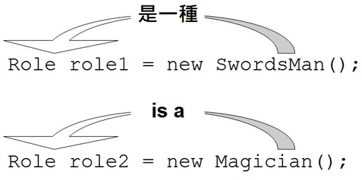
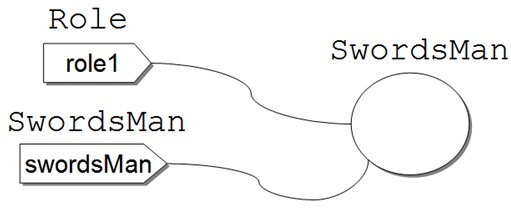

共同行為與 is a
June 2, 2022子類別繼承（Inherit）父類別，可避免重複定義行為與實作，然而並非想避免重複定義行為與實作時就使用繼承，畢竟濫用繼承而導致程式維護上的問題時有所聞。
提出父類別
假設你在正開發一款RPG（Role-playing game）遊戲，一開始設定的角色有劍士與魔法師。首先你定義了劍士類別：
public class SwordsMan {
private String name; // 角色名稱
private int level; // 角色等級
private int blood; // 角色血量
public void fight() {
System.out.println("揮劍攻擊");
}
public int getBlood() {
return blood;
}
public void setBlood(int blood) {
this.blood = blood;
}
public int getLevel() {
return level;
}
public void setLevel(int level) {
this.level = level;
}
public String getName() {
return name;
}
public void setName(String name) {
this.name = name;
}
}
接著你為魔法師定義類別：
public class Magician {
private String name; // 角色名稱
private int level; // 角色等級
private int blood; // 角色血量
public void fight() {
System.out.println("魔法攻擊");
}
public void cure() {
System.out.println("魔法治療");
}
public int getBlood() {
return blood;
}
public void setBlood(int blood) {
this.blood = blood;
}
public int getLevel() {
return level;
}
public void setLevel(int level) {
this.level = level;
}
public String getName() {
return name;
}
public void setName(String name) {
this.name = name;
}
}
你注意到什麼呢？因為只要是遊戲中的角色，都會具有角色名稱、等級與血量，類別中也都為名稱、等級與血量定義了取值方法與設值方法，Magician 與 SwordsMan 有重複的程式碼。重複在程式設計上，就是不好的訊號。舉個例子來說，如果你要將 name、level、blood 改名為其他名稱，那就要修改 SwordsMan 與 Magician 兩個類別，如果有更多類別具有重複的程式碼，那就要修改更多類別，造成維護上的不便。
如果要改進，可以把相同的程式碼提昇（Pull up）為父類別：
package cc.openhome;
public class Role {
private String name;
private int level;
private int blood;
public int getBlood() {
return blood;
}
public void setBlood(int blood) {
this.blood = blood;
}
public int getLevel() {
return level;
}
public void setLevel(int level) {
this.level = level;
}
public String getName() {
return name;
}
public void setName(String name) {
this.name = name;
}
}
這個類別在定義上沒什麼特別的新語法，只不過是將 SwordsMan 與 Magician 重複的程式碼複製過來。接著 SwordsMan 可以如下繼承 Role：
package cc.openhome;
public class SwordsMan extends Role {
public void fight() {
System.out.println("揮劍攻擊");
}
}
關鍵字 extends 表示 SwordsMan 會擴充 Role 的實作，也就是繼承 Role 的實作，再擴充 Role 原本沒有的 fight 實作。程式面上來說，Role 有定義的程式碼，SwordsMan 都繼承而擁有了，並再定義了 fight 方法的程式碼。類似地，Magician 也可以如下定義繼承 Role 類別：
package cc.openhome;
public class Magician extends Role {
public void fight() {
System.out.println("魔法攻擊");
}
public void cure() {
System.out.println("魔法治療");
}
}
Magician 繼承 Role 的實作，再擴充了 Role 原本沒有的 fight 與 cure 實作。
如何看出確實有繼承了呢？以下簡單的程式可以看出：
package cc.openhome;
public class RPG {
public static void main(String[] args) {
demoSwordsMan();
demoMagician();
}
static void demoSwordsMan() {
SwordsMan swordsMan = new SwordsMan();
swordsMan.setName("Justin");
swordsMan.setLevel(1);
swordsMan.setBlood(200);
System.out.printf("劍士：(%s, %d, %d)%n", swordsMan.getName(),
swordsMan.getLevel(), swordsMan.getBlood());
}
static void demoMagician() {
Magician magician = new Magician();
magician.setName("Monica");
magician.setLevel(1);
magician.setBlood(100);
System.out.printf("魔法師：(%s, %d, %d)%n", magician.getName(),
magician.getLevel(), magician.getBlood());
}
}
雖然 SwordsMan 與 Magician 並沒有定義 getName、getLevel 與 getBlood 等方法，但從 Role 繼承了這些方法，就如範例中可以直接使用，執行的結果如下：
劍士：(Justin, 1, 200)
魔法師：(Monica, 1, 100)
繼承的好處之一，就是若你要將 name、level、blood 改名為其他名稱，那就只要修改 Role.java 就可以了，只要是繼承 Role 的子類別都無需修改。有的書籍或文件會說，private 成員無法繼承，那是錯的！如果 private 成員無法繼承，那為什麼上面的範例 name、level、blood 記錄的值會顯示出來呢？private 成員會被繼承，只不過子類別無法直接存取，必須透過父類別提供的方法來存取（如果父類別願意提供存取方法的話）。
多型與 is a
在 Java 中，子類別只能繼承一個父類別，繼承除了可避免類別間重複的實作定義外，還有個重要的關係，那就是子類別與父類別間會有 is a 的關係，中文稱為「是一種」的關係，這是什麼意思？以先前範例來說，SwordsMan 繼承了 Role，SwordsMan 是一種 Role（SwordsMan is a Role），Magician 繼承了 Role，Magician 是一種 Role（Magician is a Role）。
為何要知道繼承時，父類別與子類別間會有「是一種」的關係？因為要開始理解多型（Polymorphism），必須先知道你操作的物件是「哪一種」東西！
來看實際的例子，以下的程式碼片段，相信你現在沒有問題地看懂，而且知道可以通過編譯：
SwordsMan swordsMan = new SwordsMan();
Magician magician = new Magician();
那你知道以下的程式片段也可以通過編譯嗎？
Role role1 = new SwordsMan();
Role role2 = new Magician();
那你知道以下的程式片段為何無法通過編譯呢？
SwordsMan swordsMan = new Role();
Magician magician = new Role();
編譯器就是語法檢查器，要知道以上程式片段為何可以通過編譯，為何無法通過編譯，就是將自己當作編譯器，檢查語法的邏輯是否正確，方式是從 = 號右邊往左讀：右邊是不是一種左邊呢（右邊型態是不是左邊型態的子類別）？

從右往左讀，SwordsMan 是不是一種 Role 呢？是的！所以編譯通過。Magician 是不是一種 Role 呢？是的，編譯通過！同樣的判斷方式，可以知道為何以下編譯失敗：
SwordsMan swordsMan = new Role(); // Role 是不是一種 SwordsMan？
Magician magician = new Role(); // Role 是不是一種 Magician？
編譯器認為第一行，Role 不一定是一種 SwrodsMan，編譯失敗，對於第二行，編譯器認為 Role 不一定是一種 Magician，編譯失敗。繼續把自己當成編譯器，再來看看以下的程式片段是否可以通過編譯：
Role role1 = new SwordsMan();
SwordsMan swordsMan = role1;
這個程式片段最後會編譯失敗，先從第一行看，SwordsMan 是一種 Role，這行可以通過編譯。編譯器檢查這類語法，一次只看一行，就第二行而言，編譯器看到 role1 為 Role 宣告的名稱，於是檢查 Role 是不是一種 SwordsMan，答案是不一定，所以編譯失敗在第二行！
編譯器會檢查父子類別間的「是一種」關係，如果你不想要編譯器囉嗦，可以叫它住嘴：
Role role1 = new SwordsMan();
SwordsMan swordsMan = (SwordsMan) role1;
對於第二行，原本編譯器想囉嗦地告訴你，Role 不一定是一種 SwordsMan，但你加上了 (SwordsMan) 讓它住嘴了，因為這表示，你就是要讓 Role 扮演（CAST）SwordsMan，既然你都明確要求編譯器別囉嗦了，編譯器就讓這段程式碼通過編譯了，不過後果得自行負責！
以上面這個程式片段來說，role1確實參考至SwordsMan實例，所以在第二行讓SwordsMan實例扮演SwordsMan並沒有什麼問題，所以執行時期並不會出錯。

以下的程式片段，編譯可以成功，但執行時期會出錯：
Role role2 = new Magician();
SwordsMan swordsMan = (SwordsMan) role2;
對於第一行，Magician 是一種 Role，可以通過編譯，對於第二行，role2 為 Role 型態，編譯器原本認定 Role 不一定是一種 SwordsMan 而想要囉嗦，但是你明確告訴編譯器，就是要讓 Role 扮演為 SwordsMan，編譯器就讓你通過編譯了，不過後果自負，實際上，role2 參考的是 Magician，你要讓魔法師假扮為劍士？這在執行上會是個錯誤，JVM 會拋出 java.lang.ClassCastException。
使用有一種（is-a）原則，你就可以判斷，何時編譯成功，何時編譯失敗，以及將扮演（CAST）看作是叫編譯器住嘴語法，並留意參考的物件實際型態，你就可以判斷何時扮演成功，何時會拋出 ClassCastException。例如以下編譯成功，執行也沒問題：
SwordsMan swordsMan = new SwordsMan();
Role role = swordsMan; // SwordsMan 是一種 Role
以下程式片段會編譯失敗：
SwordsMan swordsMan = new SwordsMan();
Role role = swordsMan; // SwordsMan 是一種 Role，這行通過編譯
SwordsMan swordsMan2 = role; // Role 不一定是一種 SwordsMan，編譯失敗
以下程式片段編譯成功，執行時也沒問題：
SwordsMan swordsMan = new SwordsMan();
Role role = swordsMan; // SwordsMan 是一種 Role，這行通過編譯
// 你告訴編譯器要讓 Role 扮演 SwordsMan，以下這行通過編譯
SwordsMan swordsMan2 = (SwordsMan) role; // role 參考 SwordsMan 實例，執行成功
以下程式片段編譯成功，但執行時拋出 ClassCastException：
SwordsMan swordsMan = new SwordsMan();
Role role = swordsMan; // SwordsMan 是一種 Role，這行通過編譯
// 你告訴編譯器要讓 Role 扮演 Magician，以下這行通過編譯
Magician magician = (Magician) role; // role 參考 SwordsMan 實例，執行失敗
經過以上這一連串的語法測試，好像只是在玩弄語法？不！你懂不懂以上這些東西，牽涉到寫出來的東西有沒有彈性、好不好維護的問題！
有這麼嚴重嗎？來出個題目給你吧！請設計 static 方法，顯示所有角色的血量！有的人會撰寫以下的方法定義：
public static void showBlood(SwordsMan swordsMan) {
System.out.printf("%s 血量 %d%n",
swordsMan.getName(), swordsMan.getBlood());
}
public static void showBlood(Magician magician) {
System.out.printf("%s 血量 %d%n",
magician.getName(), magician.getBlood());
}
分別為 SwordsMan 與 Magician 設計 showBlood 同名方法，這是重載方法的運用，如此就可以如下呼叫：
showBlood(swordsMan); // swordsMan 是 SwordsMan 型態
showBlood(magician); // magician 是 Magician 型態
現在的問題是，目前你的遊戲中是只有 SwordsMan 與 Magician 兩個角色，如果有一百個角色呢？重載出一百個方法？這種方式顯然不可能！重載的運用場合，是不同型態會有不同流程實作，如果發現重載的方法流程是類似的，設計上就有檢討的可能性。
如果所有角色都是繼承自 Role，而且你知道這些角色都是一種 Role，就可以如下設計方法並呼叫：
package cc.openhome;
public class RPG {
public static void main(String[] args) {
SwordsMan swordsMan = new SwordsMan();
swordsMan.setName("Justin");
swordsMan.setLevel(1);
swordsMan.setBlood(200);
Magician magician = new Magician();
magician.setName("Monica");
magician.setLevel(1);
magician.setBlood(100);
showBlood(swordsMan);
showBlood(magician);
}
static void showBlood(Role role) {
System.out.printf("%s 血量 %d%n",
role.getName(), role.getBlood());
}
}
在這邊僅定義了一個 showBlood 方法，參數宣告為 Role 型態，第一次呼叫 showBlood 時傳入了 SwordsMan 實例，這是合法的語法，因為 SwordsMan 是一種 Role，第一次呼叫 showBlood 時傳入了 Magician 實例也是可行，因為 Magician 是一種 Role。執行的結果如下：
Justin 血量 200
Monica 血量 100
這樣的寫法好處為何？就算有 100 種角色，只要它們都是繼承 Role，都可以使用這個方法顯示角色的血量，而不需要像先前重載的方式，為不同角色寫 100 個方法，多型的寫法顯然具有更高的可維護性。
順便一提的是，對於以下的程式片段：
SwordsMan swordsMan = new SwordsMan();
Role role = swordsMan;
SwordsMan swordsMan2 = (SwordsMan) role;
就上例來說，宣告 swordsMan 時可以使用 var，而 role 指定給 swordsMan2 時，已經明確告知編譯器要轉為 SwordsMan 型態，宣告 swordsMan2 時就可以使用 var：
var swordsMan = new SwordsMan();
Role role = swordsMan;
var swordsMan2 = (SwordsMan) role;